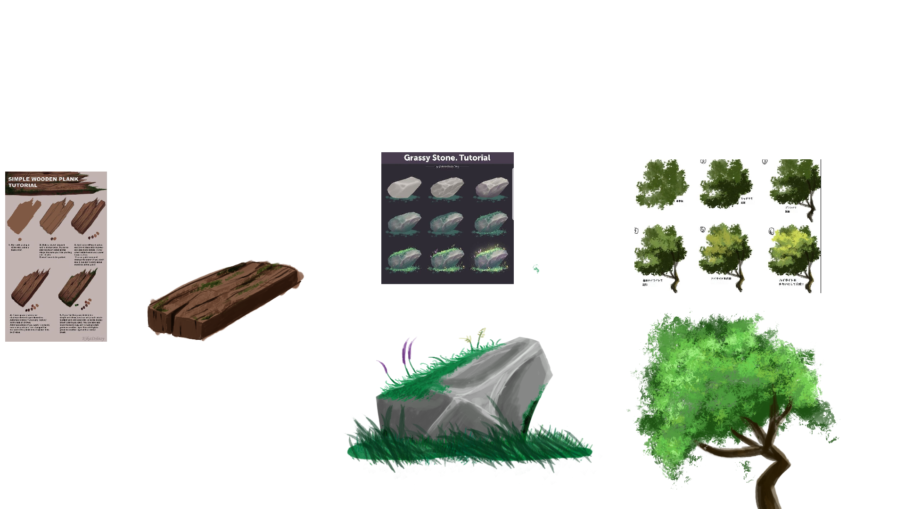

Yes I skipped Day 1 and 2...
I'm focused now on becoming more of a game designer! Classes have now been shifted more from technological STEM stuff to now be more leaning to ARTS. Starting off, this semester (as of 9/6/2025), I'm taking a Drawing for Animation and Games class, getting my art career started. I've already learned a lot so far, learning off about perspective, proportions and basic digital drawing stuff but I want to expand it further so I'm taking it in my own hands to learn outside the class. Today, I decided to play around with textures, so I sought for some basic references for how people draw certain textures on Pinterest and gave it a shot. Take a look! (Hover for larger picture!)

I think I achieved my texturing pretty dang well, the rock being my favorite to do. I can definitely improve on my tree but with what I was given, I think I did pretty good. Just some more practice!